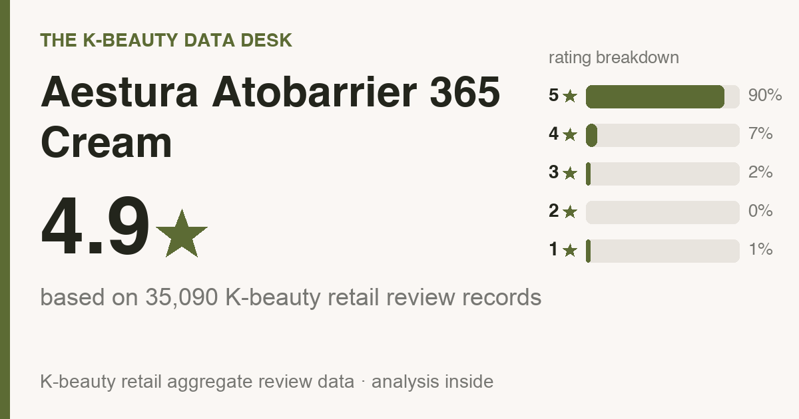

Updated July 2026. I read 500 of the 35,090 real Olive Young reviews line by line and skimmed the rest, so this is the crowd talking, not me guessing. Every one is a real buyer. I didn't write, buy, or translate a single review.
Fair warning: the store links at the bottom are affiliate links, so I might make a small cut if you buy through one. Costs you nothing extra, and it has zero pull on what the numbers say.

The 10-second version: 4.9★ across 35,090 Olive Young reviews, with 90% handing it a full five. Buyers rank it highest for hydration (74%), soothing redness (25%), and it's a dry and combination skin favorite (full who-should-skip rundown below).
In Korea it's about ₩29,700 (≈ $22). US retail bounces around, so check the buy links for today's number. The number that convinced me: only 10% of reviewers said they bought it again. Most liked it fine but didn't feel yanked back for a refill. That reads as try-it-if-you're-curious, not a holy-grail staple. If budget is the deciding vote, a basic hydrating cream covers the same essentials for less.
Aestura Atobarrier 365 Cream is a top seller on Olive Young (think Korea's Sephora), but search it in English and you get almost nothing usable, maybe one TikTok that tells you nothing. So I dug through what the reviews actually say and pulled the parts you'd want a blunt friend to flag before you spend.
The average sits at 4.9 stars, and it isn't a few loud superfans hauling it up. 90% of reviewers gave the full five stars (that's nearly 9 in 10), and 97% landed at four or five. Broad agreement, not a vocal minority.
Read enough of them and the same words surface again and again. Mostly, people love the hydration.
What's it genuinely good at? By the numbers:
Star ratings are the headline. The part that actually decides your purchase is buried in the body text, so I worked through the 500 most-helpful reviews and tallied what kept coming up. Quick math note: the deeper numbers in this section come from those 500, while the star ratings and skin-type splits earlier are from the full review base. What stood out:
In the 5-star pile, the phrases that repeat are zero irritation, no sticky or heavy feel, and soothing / redness.
If your skin panics easily, this beats any star rating. Of everyone who brought it up, 77% said it felt gentle with zero sting, and just 1% reported any irritation at all. That's about as reassuring as this kind of data gets. Still, your face is your face, so patch-test on your jaw for a couple of days before going all in.
The reviewer pool skews dry (53%), combination (42%), oily (5%), so that's whose skin these reviews actually describe (it leans dry and combination skin). If that's you, you're reading the most relevant crowd. If it isn't, it doesn't mean the cream flops on you, just that fewer reviewers share your type, so weight what you read accordingly.
Genuinely worth it for you if:
Who I'd gently steer away (or at least tell to go in eyes-open):
Nothing suits everyone. If one of these is what you're really after, here's the category I'd redirect your money to, with rough US prices so the budget's no surprise:
Treat those as research leads, not ranked picks. I only put my name behind a product after reading its reviews, so go check them yourself and match on results first, price second.
I read the reviews, not the lab sheet, so I can't confirm the fragrance status either way (we go off reviews, not the INCI). The 30-second check that actually decides it: on the buy page, Ctrl/Cmd-F the ingredient list for "fragrance / parfum" and "alcohol denat." If either shows up and your skin reacts to it, skip. Reviewers called it gentle, but for reactive skin the label is your real answer, not a star rating.
Routine order trips people up, so here's the no-fuss version for a cream like this:
Strong match. Dry skin was the single biggest group at 53% of reviewers, so if that's you, the odds tilt your way.
Mostly yes. 77% of reviewers said it felt gentle with no sting, and the irritation rate is genuinely low. Still patch-test if you react to everything.
Reviewers call it fast-absorbing and fresh rather than greasy, so the glow reads more like dewy hydration than a heavy sheen. One honest gap: this is a Korean review base, so it can't tell you how that finish lands on deeper skin tones specifically, and I won't invent a verdict the reviews don't contain. Do this instead: press a thin layer onto one cheek, then look at it in daylight AND in a flash selfie before you commit. A dewy formula can read shiny on any tone under a flash, so the only honest answer is to see how it behaves on your own skin.
Honestly, probably not. Normal skin will like it but won't need it, and if the cream you own already works, this won't rearrange your life. It's a genuinely nice one if you're starting fresh or replacing something you don't love, but “I already have one that works” is a perfectly good reason to skip.
The real tell is whether people come back, not the buzz. 10% said they repurchased and 27% reviewed after a month or more, and reviewers most often rate it best for hydration (74%). The re-buy rate is modest, so the honest read is: it delivers on that one job, it just doesn't inspire frantic restocking.
It's one of the better-reviewed picks in its category, though repeat-buys are modest, so treat it as a try-it, not a staple. Worth it if its top reviewer-voted strengths line up with what your skin actually needs, and you're not buying it for the hyped actives.
I read the reviews, not the ingredient list, so I can't confirm fragrance status. If you're fragrance-sensitive, Ctrl-F the label first, then patch-test on your jaw for 24–48h.
I don't track other brands' prices, so I won't invent a dupe for you. Compare it against other top-ranked picks in the same category and match on what reviewers say it does best, not just on price.
Amazon is the easiest (it auto-routes to your local store), and Olive Young runs its own US store (us.oliveyoung.com) now too. YesStyle and Stylevana are solid value alternates. Outside the US, Olive Young Global ships to the UK, Canada, Australia, Singapore and more. Links are below.
For dry and combination skin that wants hydration and soothing redness, this is an easy yes. At the job it's actually trying to do, people are clearly happy with it. If that's the lane you're shopping in, and you don't already own a cream you love, it's a confident yes from me.
And it's not just first-impression love. 27% of the reviews I read came after a month or more of use, so people don't cool on it after the first week.
Not your match? Here are other reviews I built the exact same way, all the numbers and who-should-skip included:
Disclosure: This article contains affiliate links. If you buy through them, I may earn a small commission at no extra cost to you.
If you're in the US:
Outside the US (UK, Canada, Australia, Singapore, NZ and more):
On prices: the only number I can vouch for is the dated Korea shelf price above (pulled 2026-07-06). Stores reprice constantly and bundles muddy comparisons, so always compare the per-item price at the link before you buy.
← All K-Beauty Data Desk reviews · Best-seller rankings · About & methodology
Published by The K-Beauty Data Desk · Data refreshed 2026-07-06. The reviews are 100% real Olive Young buyers. I read the reviews and made sense of them for you; I never wrote, bought, paid for, or translated any individual review, and I did NOT test the product on my own skin. I received no free product and am not paid or approved by the brand. Check the source ratings yourself.
Data basis: aggregate statistics from Olive Young Korea, retrieved 2026-07-06. The ratings, review count, star distribution and satisfaction polls are all facts pulled in aggregate. The wording, decoding and recommendations are mine. I never copy or translate individual user reviews.